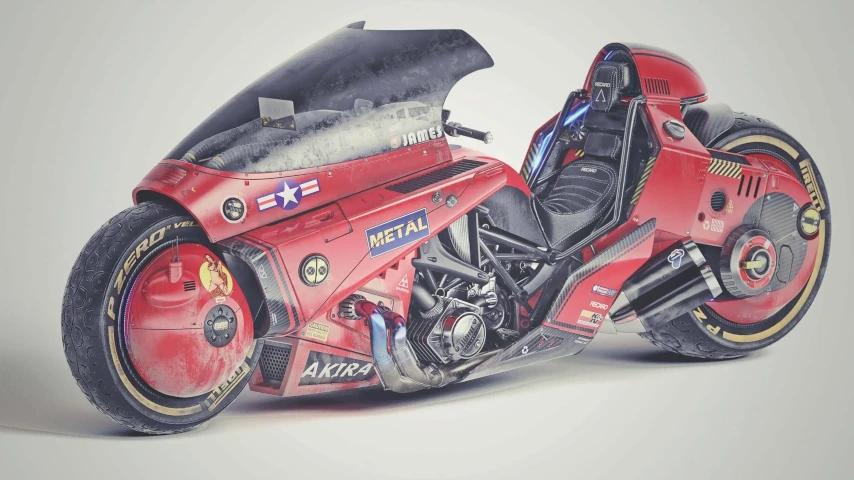
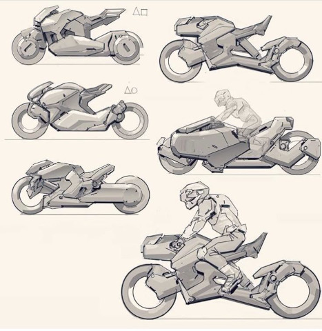
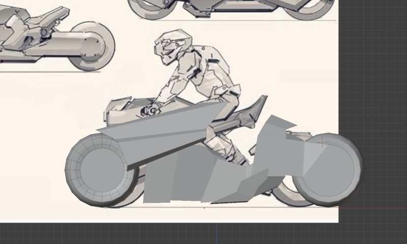
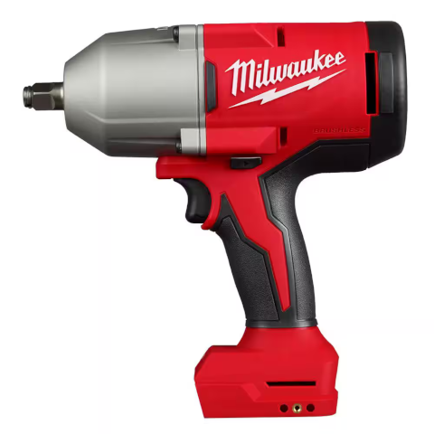
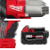

The first step I take when creating a 3D asset is finding good references for whatever it is I'm trying to make. The references are useful for every proceeding step.


During modeling, I'll sometimes try to copy the shape of the reference 1:1. Other times, like with the bike, I just use them to ensure the proportions are okay:

During texturing, the references can be used as inspiration (like with the bike), or chopped up and used in the final product, like with the drill:

